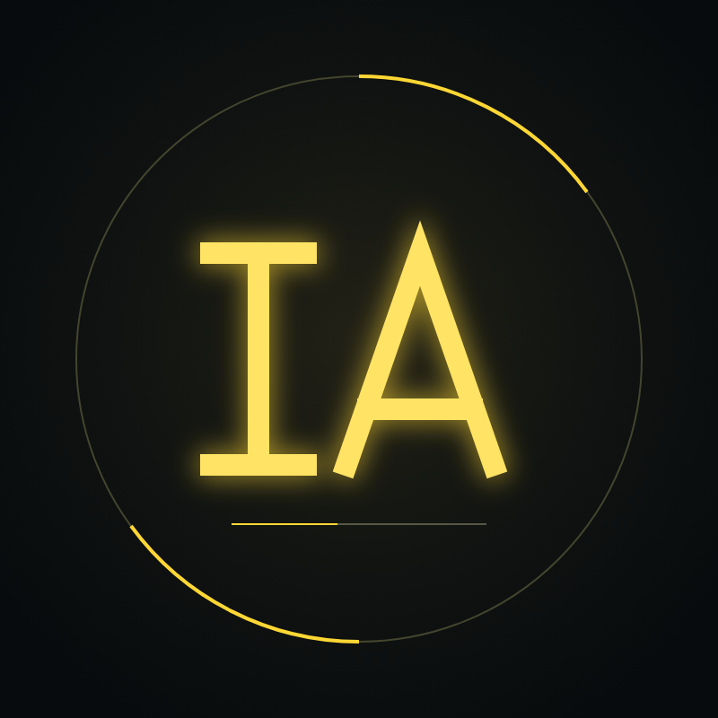

Construo software para tirar trabalho repetitivo do caminho.
Trabalho em módulos internos de ERP, integrações e automações. Minha experiência em operações financeiras ajuda a conectar a lógica do negócio ao software que resolve o problema.

Ferramentas que uso
02 / STACKProjetos em destaque
03 / SELECTED WORKBank Reconciliation
Importa extratos OFX/CSV, cruza lançamentos e aponta o que foi conciliado, divergiu ou ainda está pendente.
VER PROJETO ↗StreamHub
Compartilhamento de tela em salas privadas, com WebRTC, voz opcional e diagnóstico de conexão.
CÓDIGO ↗ DEMO ↗Lupa.NET
Explora código C# reconstruído, IL, metadados e referências sem executar o assembly analisado.
VER PROJETO ↗MNEME
Pesquisa financeira com pipelines de dados, backtesting e fluxos locais de LLM/RAG.
REPOSITÓRIO ↗ APP ↗Uma trajetória entre negócio e tecnologia
04 / EXPERIENCEERP interno, integrações, desenvolvimento full-stack e IA aplicada.
Java, Spring Boot, microsserviços e automação de processos financeiros.
Fluxo de caixa, conciliação bancária e rotinas financeiras.
Formação
Idiomas
Português · Nativo
Inglês · B2 (escrita B1)
Cibersegurança · RAG · agentes de IA